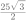

시험대비 · 견본 · 중3 · 삼각비
이름
001
의 값은?
002
다음 그림과 같이  ,
,  , 인 직각삼각형 의 넓이를 구하시오.
, 인 직각삼각형 의 넓이를 구하시오.
시험대비 · 견본 · 중3 · 삼각비
이름
의 값은?


다음 그림과 같이 , , 인 직각삼각형 의 넓이를 구하시오.
시험대비 · 견본 · 중3 · 삼각비
한 변의 길이가 2인 정사각형의 대각선의 길이는?

시험대비 · 견본 · 중3 · 삼각비
의 값은?
정답: ③
, 이므로
이다.
따라서 구하는 값은 이다.
다음 그림과 같이 , , 인 직각삼각형 의 넓이를 구하시오.
정답: 
주어진 그림에서
,
이므로
이다.
따라서 의 넓이는
이다.
시험대비 · 견본 · 중3 · 삼각비
한 변의 길이가 2인 정사각형의 대각선의 길이는?
정답: ③
대각선은 한 변의 길이가 2인
직각이등변삼각형의 빗변이므로
길이는 이다.
따라서 대각선의 길이는  이다.
이다.